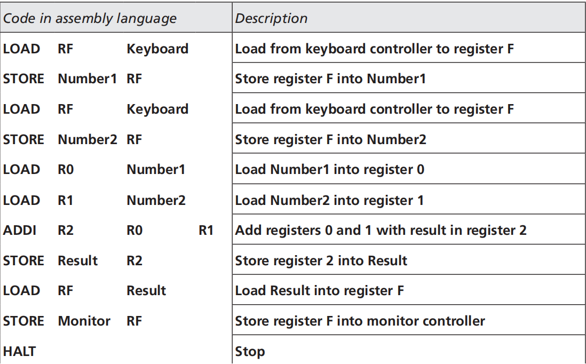
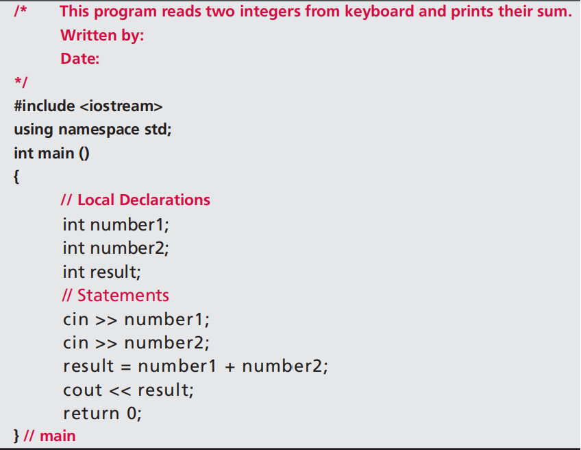
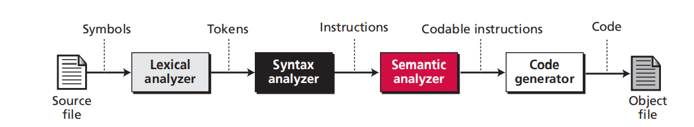
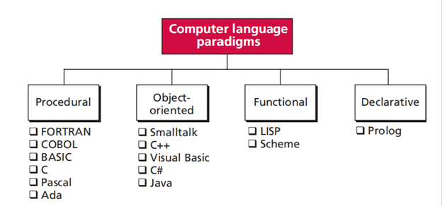

Made of 0s and 1s. The only language understood by a computer. The internal circuit of a computer is made up of switches, transistors, and other electronic devices that can be in 2 states: off (0) and on (1).
2. Symbolic Languages (Assembly Languages)

Symbolic language: machine language (assembler). Symbols/mnemonic: machine instructions created by Grace Hopper in the early 1950s. Tedious and complex.
3. High-Level Languages

Greatly improved programmer efficiency. Portable to many different computers. Examples include BASIC, COBOL, Pascal, Ada, C, C++, Java.
4. Natural Languages
You could use your natural languages (English, French, or Chinese), and the computer would understand it and execute your requests immediately. So far, its use in industry is still quite limited.
How to Build a Program?
Step 1: Writing and Editing Programs
Text editor: enter/change/store character data.
Source file: after you complete a program, you save your file (source file) to disk.
Step 2: Compiling Programs
High-level languages need to be compiled into machine languages to run. This involves the following:
Compiler (preprocessor & translator):
Preprocessor: reads the source code and scans for preprocessor directives and prepares it for the translator.
Translation unit: the result of preprocessing.
Translator: reads the translation unit and writes the resulting module to a file.
Step 3: Linking Programs
Linker: assembles all of these functions, both yours and the system’s, into your final executable program.
Key Translation
The source program in high-level language is compiled or interpreted into machine language.
1. Compiler
Normally translates the whole source program into the object program.
2. Interpretation
First Approach
Each line of the source program is translated into the machine language. If there are any errors in translation and execution, the process displays a message and aborts. The program needs to be corrected and interpreted and executed again from the beginning. This slow process is why most languages use compilation instead of interpretation.
Second Approach
A Java source program is compiled into Java bytecode (object code) for use on a Java Virtual Machine (JVM). When you run a Java program, it only needs a JVM emulator, not the Java compiler.
3. Translation Process

Lexical analyzer: reads the source code symbol by symbol and creates a list of tokens in the source language.
Syntax analyzer: parses a set of tokens to find instructions.
Semantic analyzer: checks the sentences created by the syntax analyzer to ensure they contain no ambiguity.
Code generator: converts each instruction to a set of machine language instructions.
How to Apply?
We use paradigms as a way in which a computer language looks at the problem to be solved.

FORTRAN (FORmula TRANslation)
The first high-level language designed by a group of IBM engineers under the supervision of Jack Backus, which became commercially available in 1957. Over the last 40 years, FORTRAN has evolved through several versions. The latest version (HPF, High Performance Fortran) is used in high-speed multiprocessor computer systems. Features include:
High-precision arithmetic
Capability of handling complex numbers
Exponentiation computation (ab)
COBOL (COmmon Business-Oriented Language)
Designed by a group of computer scientists under the direction of Grace Hopper of the US Navy. Its goals include:
Fast access to files and databases
Fast updating of files and databases
Large amounts of generated reports
User-friendly formatted output
Pascal
Invented by Niklaus Wirth in 1971, named after the famous mathematician Blaise Pascal. It aimed to teach programming by emphasizing a structured programming approach.
C
Developed by Dennis Ritchie at Bell Laboratories in the early 1970s, originally for writing operating systems. Key features include:
High-level instructions that hide hardware details from the programmer.
Low-level instructions for direct hardware access, making it closer to assembly language.
Efficiency due to short instruction lengths, appealing to programmers.
Ada
Created for the US Department of Defense as a uniform language for all contractors. Features include:
High-level instructions similar to other procedural languages.
Real-time processing capabilities suitable for process control.
Parallel-processing capabilities on computers with multiple processors.
Some Common Concepts Within a Program
Identifiers: The names of objects.
Data Types: Various simple data types defined in imperative languages, including:
Integer type: the range of values depends on the language.
Real type: numbers with fractional parts.
Character type: symbols in the character set of the language.
Boolean type: values limited to true or false.
Array: a set of elements all of the same type.
Record: a set of elements that can be of different types.
Variables: Most procedural languages allow initialization upon declaration.
Literals: Predetermined values used in a program (e.g., π × r²).
Constants: Changeable literals.
Input and Output: Basic operations in programming.